🏅
Foto sertifikat belum ditambahkan
Siswa Teknik Jaringan Komputer & Telekomunikasi yang mengeksplorasi networking, cybersecurity, dan artificial intelligence melalui project dan praktik langsung.
Halo! Saya Erik Shandika, siswa jurusan Teknik Jaringan Komputer dan Telekomunikasi (TJKT) yang fokus mengembangkan kemampuan di bidang networking, cybersecurity, dan artificial intelligence.
Di sekolah saya mempelajari administrasi jaringan, jaringan kabel dan nirkabel, IP addressing, subnetting, VLSM, VLAN, DHCP, hingga routing menggunakan Cisco Packet Tracer. Dari situ saya mulai tertarik lebih jauh pada cybersecurity — memahami bagaimana jaringan yang saya bangun bisa diamankan, mulai dari dasar-dasar keamanan jaringan hingga eksplorasi Linux.
Saya juga sedang mendalami Machine Learning menggunakan Python sebagai bahasa pemrograman utama untuk eksplorasi AI. HTML, CSS, dan JavaScript saya gunakan sebagai kemampuan pendukung — untuk membuat antarmuka atau tools sederhana yang menunjang project utama saya, bukan sebagai fokus utama.
Saya belajar melalui project nyata, eksperimen, dan praktik langsung — bukan sekadar teori.
Administrasi jaringan, IP addressing, subnetting, VLSM, VLAN, DHCP, routing, dan simulasi topologi dengan Cisco Packet Tracer.
Mempelajari dasar keamanan jaringan dan Linux sebagai lanjutan alami dari pemahaman saya tentang bagaimana jaringan bekerja.
Eksplorasi Machine Learning dan Computer Vision menggunakan Python, dibuktikan lewat project-project praktis.
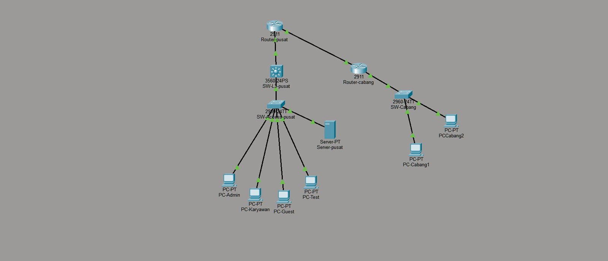
Kantor pusat dan cabang butuh jaringan yang tersegmentasi, aman, dan tetap saling terhubung. Saya merancang topologi enterprise di Cisco Packet Tracer dengan VLAN untuk memisahkan segmen jaringan, inter-VLAN routing, serta OSPF sebagai protokol routing dinamis antar kantor melalui WAN. Layanan DHCP, DNS, dan Web Server turut dikonfigurasi agar jaringan berfungsi end-to-end. Hasilnya, seluruh perangkat di kedua lokasi dapat saling berkomunikasi sesuai skema VLAN yang direncanakan dan lulus pengujian konektivitas. Dari project ini saya banyak belajar tentang bagaimana desain jaringan yang baik mempengaruhi keamanan dan skalabilitas.
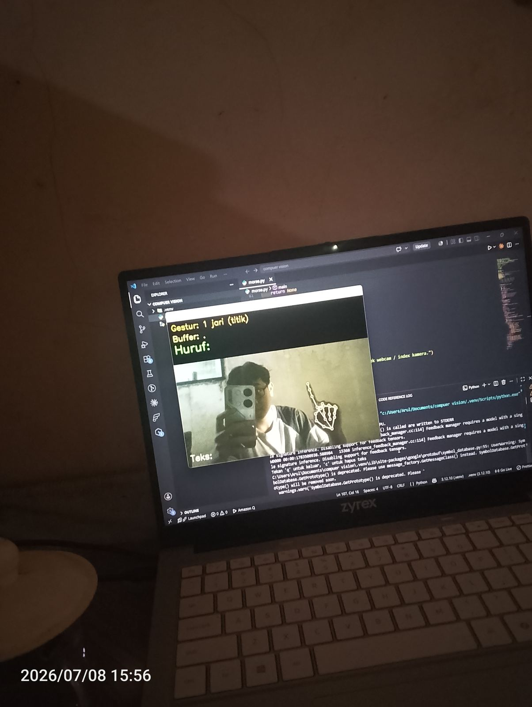
Masalah: menerjemahkan sandi morse dari gerakan tangan secara real-time tanpa alat khusus. Pendekatan: menggunakan Python dan computer vision untuk mendeteksi pola gerakan tangan lalu menerjemahkannya menjadi titik dan garis morse. Hasilnya program dapat mengenali gerakan dasar secara real-time — project ini jadi titik awal saya memahami bagaimana computer vision bekerja di dunia nyata.
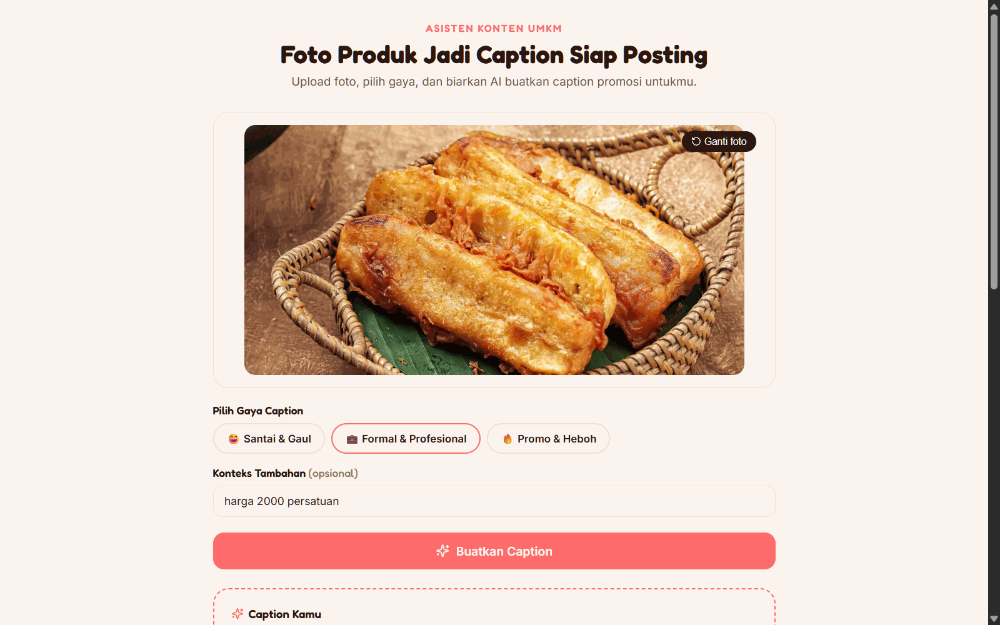
Aplikasi berbasis AI yang membantu pelaku UMKM menghasilkan caption promosi produk secara otomatis. Pengguna memasukkan informasi produk, lalu AI menghasilkan caption yang siap digunakan untuk media sosial atau marketplace — project ini melatih saya mengintegrasikan AI ke dalam sebuah tool yang benar-benar bisa dipakai.
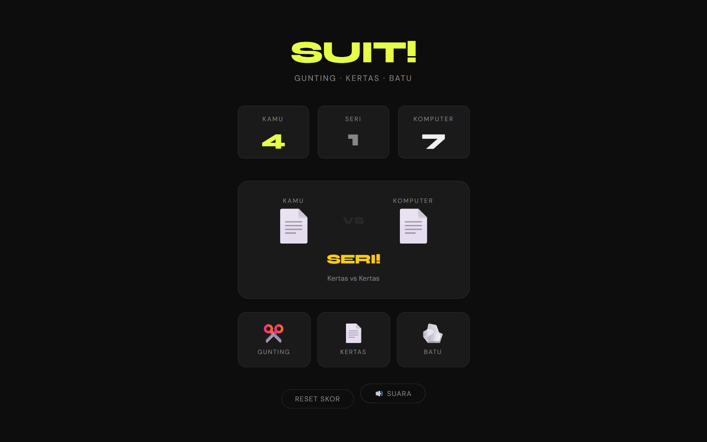
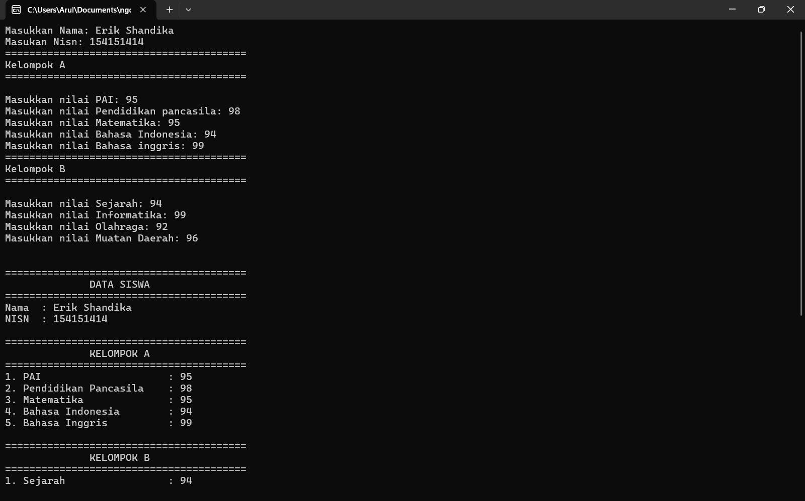
Aplikasi untuk merekap nilai rapor siswa menggunakan bahasa pemrograman C++ — latihan logika dan struktur data dasar.
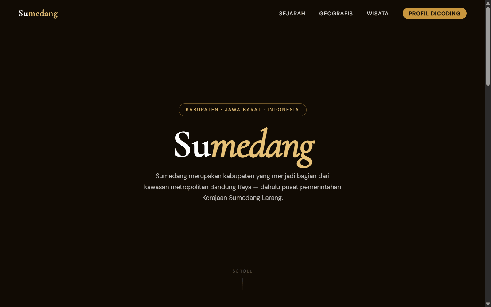
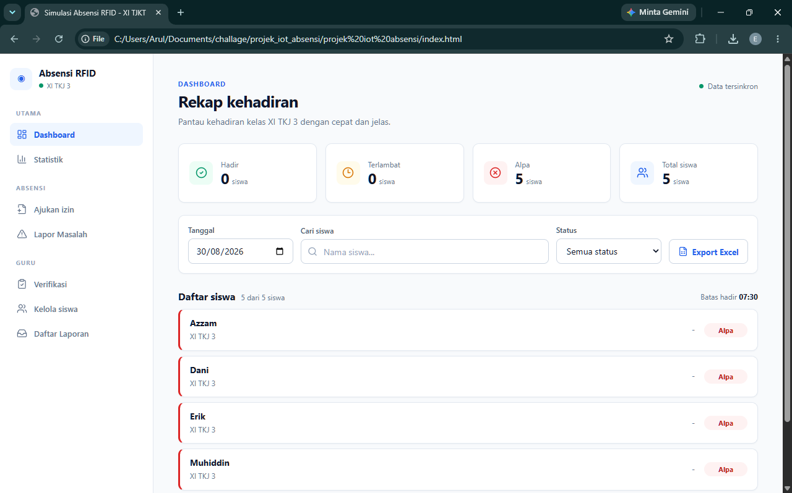
Sistem Absensi RFID — IoT + Cloud Integration Sistem absensi berbasis kartu RFID yang menghubungkan perangkat IoT (ESP32 + RC522) dengan database cloud secara real-time. Dilengkapi autentikasi berlapis, Row Level Security, dan sistem verifikasi izin digital.
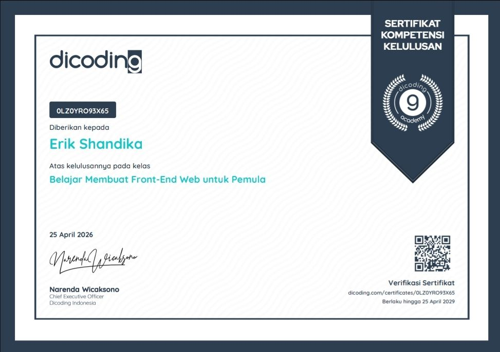
Sertifikat kompetensi kelulusan atas penguasaan dasar pengembangan antarmuka web yang interaktif dan responsif.
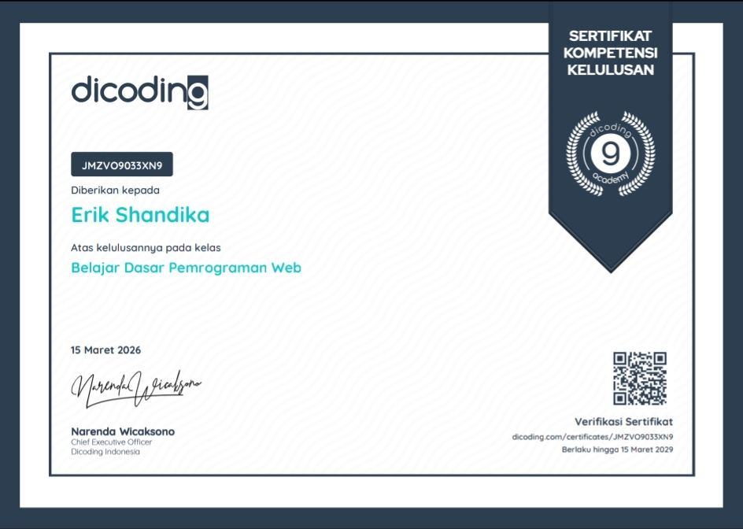
Sertifikat kompetensi kelulusan atas penguasaan dasar pemrograman web — HTML, CSS, dan JavaScript fundamental.
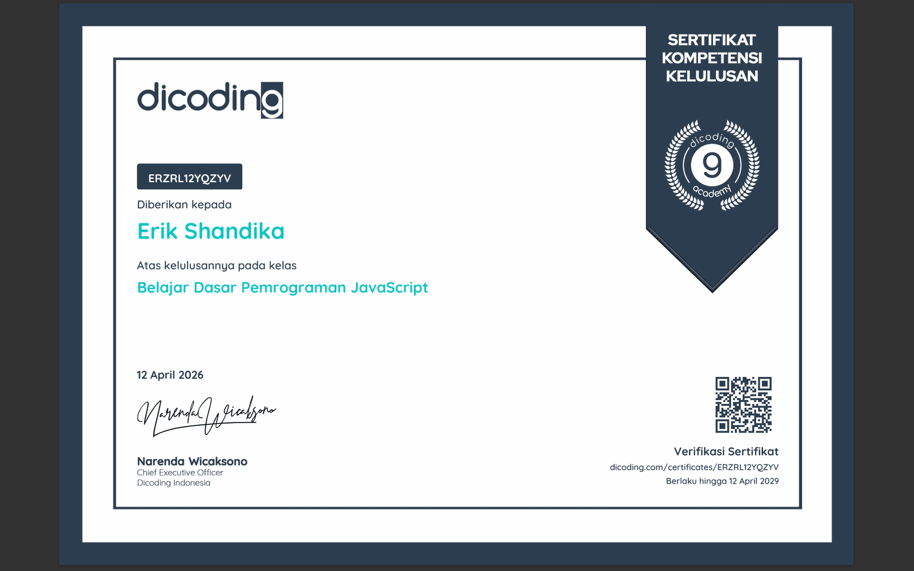
Sertifikat kompetensi kelulusan atas penguasaan dasar pemrograman JavaScript.
Sertifikat kompetensi kelulusan atas penguasaan dasar cloud dan kecerdasan buatan di AWS.
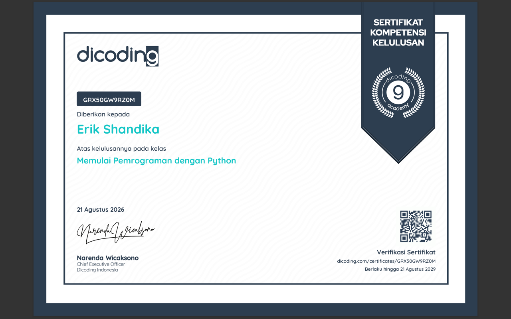
Sertifikat kompetensi kelulusan atas penguasaan Pemrograman Python.
Saya selalu terbuka untuk berdiskusi soal networking, cybersecurity, AI, atau sekadar kolaborasi project. Jangan ragu untuk menghubungi saya!